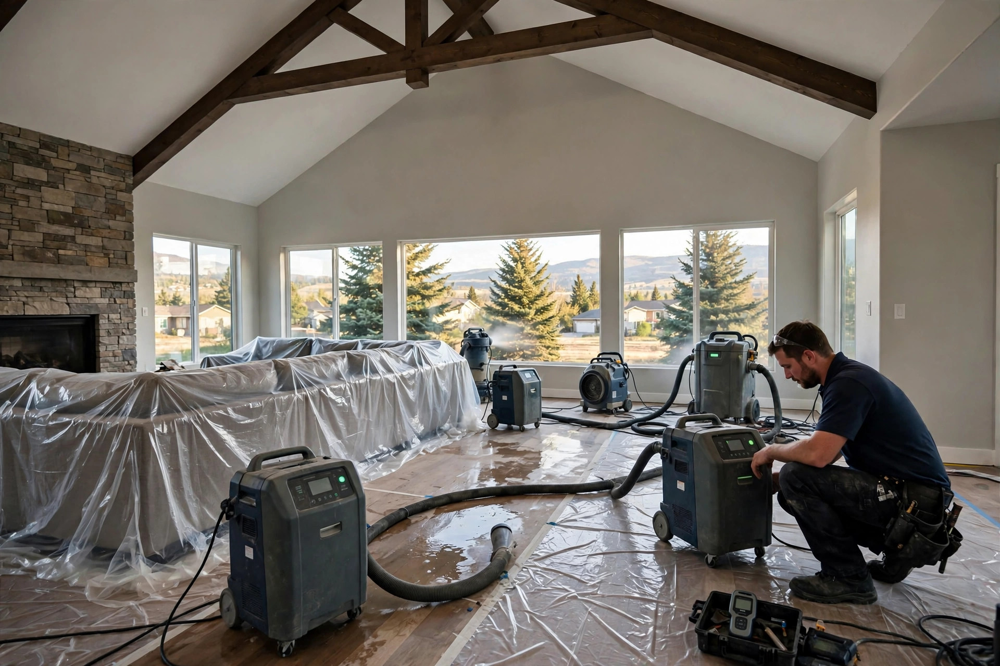

Water Damage Restoration in Eagle, ID
Extraction is only the first hour. Real restoration takes a soaked house back to dry, clean framing — then rebuilds what had to come out. Here is what that looks like in Eagle, start to finish.
What restoration actually involves
A proper restoration follows a sequence. Skipping steps is how hidden moisture turns into a mold problem three months later.
Emergency extraction
Standing water comes out first — high-capacity extractors pull it from floors, carpet, and the low spots where it hides. The source gets shut off at the same time.
Moisture mapping
Meters and thermal imaging trace how far the water traveled. Water wicks sideways through drywall and under flooring, so the wet footprint is always bigger than what you can see.
Structural drying
Air movers and commercial dehumidifiers run for days, pulling moisture out of framing, subfloor, and wall cavities. Readings are logged until every material hits its dry standard.
Selective demolition
Materials that cannot be saved — swollen MDF baseboards, saturated drywall below the flood line, delaminated subfloor — are cut out so the structure behind them can dry completely.
Mold prevention
Damp organic material grows mold fast. Exposed framing is cleaned and treated with antimicrobials, and the space stays dry-monitored until clearance readings hold steady.
Rebuild
New drywall, trim, paint, and flooring go back in only after everything behind them is verified dry. The room comes back looking like the water never happened.
Each phase protects the next one
Restoration fails when phases get rushed or reordered. Drying before extraction means equipment fights standing water instead of moisture in materials. Rebuilding before drying is verified traps dampness inside walls, where it feeds mold growth you cannot see until it breaks through paint or trim.
Moisture mapping sits between extraction and drying for a reason: it tells the crew exactly which walls to open and which can dry in place. Without a map, technicians either tear out too much — adding rebuild cost — or too little, leaving wet pockets behind. Infrared cameras spot temperature differences that hint at trapped water, and pin meters confirm the exact moisture content of wood and drywall.
The demolition phase is where judgment matters most. Drywall that wicked water up eighteen inches needs a flood cut at twenty-four; cutting at twelve leaves the top edge damp. Carpet padding almost never survives a real soaking and gets removed, while carpet itself can often be dried and reinstalled after a clean-water event. These calls come from moisture readings, not from habit.
Mold prevention is not a separate service bolted on at the end — it is woven through the whole job. The EPA notes that mold can begin growing on damp materials within 24 to 48 hours, which is why drying starts the same day as extraction and exposed framing gets antimicrobial treatment before rebuild begins. Source: EPA — Mold, Moisture & Your Home
The rebuild phase closes the loop. New materials go in only after moisture readings confirm the structure is dry, which protects the homeowner and keeps the new materials performing as they should. A restored room should look untouched — same paint lines, same trim profile, same flooring transitions — with dry framing behind every surface.
Why it happens in Eagle
Eagle sits close to the Boise River with large homes, long plumbing runs, and foothill drainage patterns that send water where it is not wanted.
Boise River corridor seepage
Homes near the river and its side channels sit over a high seasonal water table. Spring runoff pushes groundwater against foundations, and finished basements take the first hit.
Long plumbing runs in large homes
Eagle's bigger floor plans mean longer supply lines with more joints, valves, and second-floor bathrooms. More connections means more failure points, and an upstairs leak soaks two floors at once.
Foothill storm runoff
North Eagle backs up to the foothills. Heavy rain sheets off the slopes faster than swales and culverts can carry it, and water finds window wells and walkout basements.
Pressurized irrigation breaks
Pressurized irrigation lines run close to foundations through the watering season. A cracked lateral can saturate the soil against a basement wall for weeks before anyone notices.
An Eagle homeowner in Two Rivers notices the carpet squishing near a downstairs wall after a week of rain. The cause turns out to be foothill runoff pooling against the foundation and wicking through. Restoration means extracting the water, cutting the bottom two feet of drywall, drying the framing for four days, treating it, and rebuilding the wall — dry readings confirmed before a single new board goes up.
Water damage help in Eagle
Emergency Water Extraction
Standing water pulled out fast when every minute matters.
Flooded Basement Cleanup
Pump-out, drying, and salvage when a basement takes on water.
Ceiling Water Damage Repair
Stains, sagging, and drips from roof leaks or upstairs plumbing.
Water Damaged Drywall Repair
Flood cuts, drying, and rebuild after a leak or flood.
Restoration questions, straight answers
What is the difference between water extraction and water damage restoration?
Extraction removes standing water — that is one phase. Restoration is the full job: extraction, moisture mapping, structural drying, removing ruined materials, preventing mold, and rebuilding. Extraction takes hours; restoration takes days to weeks.
How long does a full restoration take in Eagle?
It depends on how far the water spread and what it soaked. A single-room clean-water incident can finish inside a week. Multi-room or contaminated-water jobs run longer because drying and rebuild phases cannot be rushed.
Do you handle the mold risk during drying?
Yes — mold prevention is built into the process. Wet materials are dried within the window the EPA flags for mold growth, exposed framing is treated, and readings are verified before rebuild starts.
Will my insurance cover water damage restoration?
Sudden incidents like burst pipes are usually covered; slow leaks and long-term seepage often are not. Document everything with photos before anything is moved, and keep damaged items until the adjuster releases them.
Can I stay in the house during restoration?
Often yes, if the damage is contained to one area. Whole-house drying with equipment running around the clock is loud and disruptive, so some families stay elsewhere for a few days. We will tell you honestly what to expect.
Water damage that needs the full fix?
Call now — extraction starts today, and the restoration plan follows the moment the water is mapped.